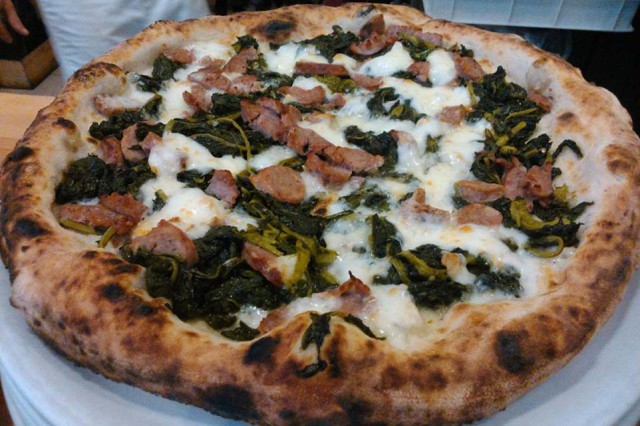

Condimenti
- Mozzarella di bufala
- Arriva Freschissima dal caseificio Sanna 100% bufale Sarde.
- Salsiccia fresca
- Solo maiali Sardi per questa fantastica salsiccia della Macelleria Puddu.
- Friarelli
- Dalla Coperativa Sole di Pula, non ne trovate di piu croccanti.
- Olio piccante
- Dalle migliori olive dell Isola lasciamo in infusioni i peperoncici per un mese.
Valori Nutrizionali
| per 100g | pizza(300g) | RDA | |
|---|---|---|---|
| Valore Energetico | 230 kcal 966kj |
759 kcal 3188kj |
38% |
| Proteine | 11g | 36g% | 73% |
| Carboidrati | 28g | 92g | 34% |
| Grassi | 8g | 26g | 38% |
| Fibre | 2g | 6g | 20% |
| Sodio | 0,5g | 1,8g | 78% |
Fragrante pizza bianca con impasto lievito madre, lievitazione 36 ore. Condita con, mozzarella di bufala, salsiccia fresca e friarelli nel nostro forno a legna e a fine cottura un filo di olio piccante per esaltarne il sapore.
